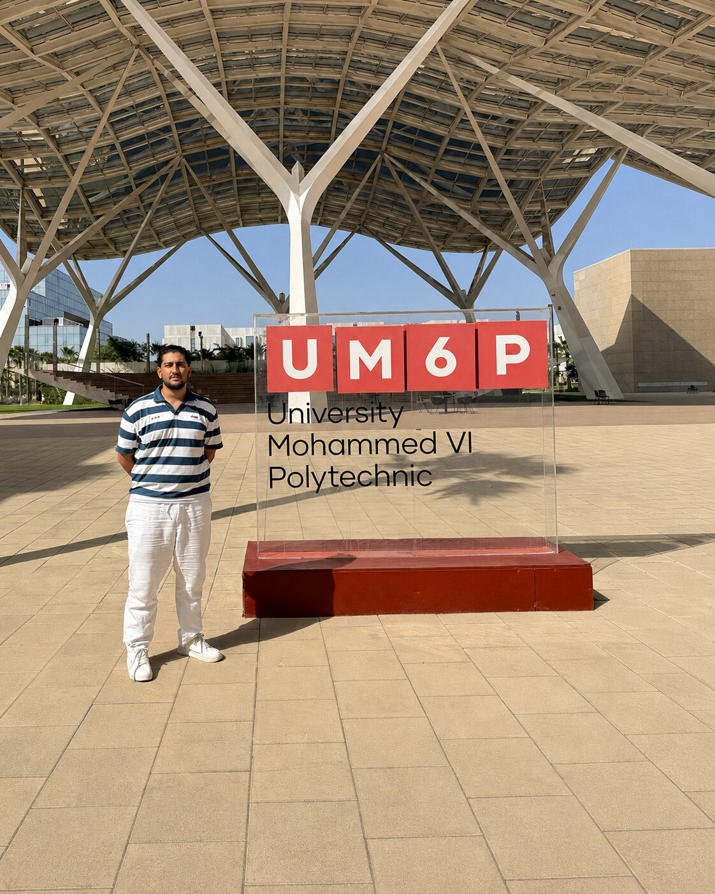
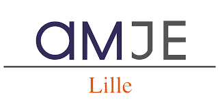

Étudiant ingénieur, je construis des modèles à l’épreuve du terrain.
Je travaille à l’intersection du génie industriel, de la mécanique, de l’optimisation et de l’IA appliquée — pour transformer des problèmes opérationnels en modèles, expériences et outils d’aide à la décision.
Trois environnements où les décisions d’ingénierie rencontrent de vraies contraintes opérationnelles.
Environnement de production Safran Nacelles · Maroc
Été 2026Casablanca, Maroc
Stagiaire en génie industriel
Safran Nacelles
Immersion en méthodes outillage, fabrication d’entrées d’air et assemblage de nacelles, puis développement d’un modèle d’allocation sous contraintes pour réduire le temps de cycle d’assemblage.
Optimisation convexe · SLSQP · plafonds par opération · validation Monte-Carlo sur 5 000 simulationsLire l’étude de cas Safran ↗

Campus UM6P · Rabat, 2026
Été 2026Rabat, Maroc
Stagiaire IA & recherche opérationnelle
UM6P AI Lab
Développement d’un prototype d’aide à la décision pour les stocks IT, combinant contrôles de qualité des données, prévisions en origine glissante et simulation de politiques sur 60 séries département–équipement.
9 modèles de prévision · 6 politiques de réapprovisionnement · validation synthétique : –21,2 % de coût total modélisé et –92,5 % d’unités d’urgence vs achats réactifs

Arts et Métiers Junior-Entreprise · Lille
2026–2027Lille & Paris, France
Responsable Développement Commercial & Partenariats
AMJE Lille
Pilotage de 15 business managers chargés de l’acquisition client, de la qualification des projets, des propositions commerciales et du suivi de missions d’ingénierie et de conseil.
27 k€ signés en 3 mois · 10 missions contractualisées · base CRM passée de 600 à 1 600 contacts
02 / Projets sélectionnés
Des projets que vous pouvez examiner.
Des résultats, graphiques et preuves concrètes dès la page d’accueil. Chaque projet donne accès à la méthode complète, aux résultats, au rapport et au dépôt lorsqu’ils sont publics.
Un cursus de Grande École associant un socle scientifique exigeant à une pratique avancée de l’ingénierie.
Parcours intégré de niveau Bachelor + Master
Génie industriel & génie mécanique
Diplôme d’ingénieur Arts et Métiers — diplôme accrédité par l’État conférant le grade de Master.
2025 — 2028Paris · Lille
Arts et Métiers — Programme Grande École
Formation avancée en systèmes industriels, mécanique, procédés de fabrication, méthodes numériques, simulation, optimisation, analyse de données, gestion de projet et conception mécanique.
Génie industriel
Génie mécanique
Fabrication
Optimisation
Données & IA
CAO / IAO
2023 — 2025Lille
Lycée Faidherbe — CPGE PCSI / PSI*
Deux années de préparation intensive aux concours nationaux des grandes écoles d’ingénieurs, centrées sur les mathématiques, la physique, les sciences de l’ingénieur, les algorithmes et la résolution analytique de problèmes.
Mathématiques
Physique
Sciences de l’ingénieur
Algorithmique
Projet académique
Recherche opérationnelle, génie industriel, supply chain et systèmes d’ingénierie — avec une priorité donnée aux modèles capables de résister aux contraintes du terrain.
04 / Leadership
Rendre les parcours d’ingénierie plus lisibles.
Une initiative personnelle mêlant mentorat, écriture et conseils pratiques pour les étudiants qui changent de système éducatif.
PASSERELLEEn développement · FR / EN
Un guide bilingue d’orientation dans l’enseignement supérieur.
Je développe PASSERELLE pour les étudiants marocains qui préparent leurs études en France. Le guide transforme les questions récurrentes du mentorat en une ressource structurée sur les choix académiques, la transition vers la France, les méthodes de travail, le logement, le budget et la vie étudiante.
Mentorat
Rédaction bilingue
Orientation pratique
Initiative communautaire
05 / Contact
Travaillons sur un problème qui mérite d’être modélisé.
Je recherche un stage pour l’été 2027 en opérations, supply chain, stratégie industrielle, optimisation ou IA appliquée.